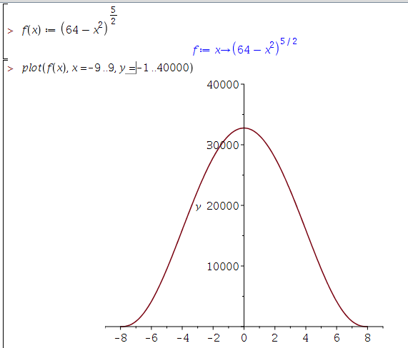
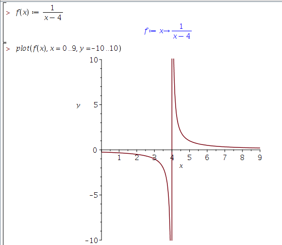

Week 1 Review Problems
Christopher Tralie
Domain/Range Example 1
Question:
If \[ f(x) = (64-x^2)^{\frac{5}{2}} \]
then what is the domain/range of f(x)?
Answer
Note that this is a slightly different example from the one we gave in class today (the upper semicircular arc), but we can reason about it in a similar way. Recall that \[ a^{\frac{5}{2}} \] is the same thing as raising a to the fifth power and then taking the square root (the numerator says to which power we take it, and the denominator says to which root). If a is negative, then a5 is also negative, because it has an odd number of negative factors. Then we would be taking a square root of a negative number, which is undefined in this class. So in this example, we need that
\[ 64-x^2 > 0 \]
or in other words
\[ x^2 < 64 \]
This implies that the domain is
\[ [-8, 8] \]
including the endpoints +/-8 where the function is zero. But we can't go less than -8 or more than 8.
Well what about the range? What's the largest number we can get? In this case, it turns out to be when we plug in x=0, which is \[ (64-0^2)^{\frac{5}{2}} = (64)^{\frac{5}{2}} = 32768 \] Also note that the smallest value is 0 at +/- 8 (we can never get a negative from doing a square root). So the range is \[ [0, 32768] \]
Just so you can see what the plot looks like, we'll do that in Maple:

Domain/Range Example 2
Question:
If \[ f(x) = \frac{1}{x-4} \]
then what is the domain/range of f(x)?
Answer
Here we have to be careful because there's a value of x that makes this undefined. In fact, when x = 4, we end up with 1/0, which is invalid. So the domain cannot include x = 4. We can write the domain using set notation as
\[ (-\infty, 4) \cup (4, \infty) \]
Notice how the domain is up to but excluding 4 on both ends.
Well what about the range? Here's where another interesting thing happens, because we can't actually ever reach zero. If we let x become a very large positive number, we can get very close to zero from above, but we never reach it. Similarly, if we let x be a very large negative number, we get very close to zero from below, but we never reach it. So the range is
\[ (-\infty, 0) \cup (0, \infty) ]
A plot of this function, which is known as a "hyperbola," is shown below

As a sneak preview for limits, the line y=0 is a "horizontal asymptote" and the line x = 4 is a "vertical asymptote"
Domain/Range Example 3
Question:
If \[ f(x) = \frac{1}{x-4} \]
then what is the domain of f(f(x))?
Answer
So we start off with the same function as the above example, but we compose it with itself. The composite function is then
\[f \circ f (x) = \frac{1}{\frac{1}{x-4}-4} \]
If we end up with an undefined value at any point in this expression, then the composition is undefined for that input! For instance, ifx=4, this is still undefined. Another way to look at this is that it fails to be defined on the first application of f, so we have to stop there (we can't plug an undefined value into the second f). But there is still one more value that can cause us problems when the denominator of f(f(x)) is zero. To solve for this, we do
\[ \frac{1}{x-4}-4 \]
\[ \frac{1}{x-4} = 4 \]
\[ 4(x-4) = 1 \]
\[ 4x = 17 \]
\[ x = 17/4 \]
So the domain of this function actually excludes both 4 and 17/4, so the final expression for the domain is
\[ (-\infty, 4) \cup (4, \frac{17}{4}) \cup (\frac{17}{4}, \infty) \]
Transformation Example 1
Question:
If
\[ g(x) = 4f(\frac{x}{2} - 3) + 12 \]
then what does g(x) to do the graph of f(x)?
Answer:
Don't forget to go back to the interactive tool if you're having trouble with this example! To answer this, we should always go back to the "canonical form" shown in that tool, which is \[ g(x) = a f \left( b(x - h) \right) + k \] In this example, the canonical form is \[ g(x) = 4f \left( \frac{1}{2} (x - 6) \right) + 12 \] Then we recall that|a| > 1stretches the function in the y direction by|a|, and|a| < 1compresses the function by a factor of1/|a|in the y direction. Furthermore, ifa < 0, then the graph is also reflected about the x-axis (flipped upside down)ksimply shifts the graph up y by the amountk- The graph is shifed along x by the amount
h. Ifhis positive, thenf(x-h)shifts to the right, and if it is negative, the graph is shifted to the left. - If
|b| < 1, then the graph is stretched out by a factor of1/|b|in the x direction about the linex = h. If|b| > 1, then the graph is compressed by a factor of|b|in the x direction about the linex = h. Ifb < 0, the graph is also reflected about the linex = h(flipped horizontally)
f undergoes the following transformations
- It is scaled vertically by a factor of 4
- It is shifted vertically by 12 units
- It is shifted to the right by 6 units
- It is stretched out by a factor of 2 about the line
x = 6
Slope Function Example 1
Question:
If
\[ f(x) = |3x - 12| \]
then what is the slope function s(x) of f(x)?
Answer:
Just to make sure we're on the same page,s(a) gives the slope of f(x) at x = a. If it wasn't for the absolute value, then this would be a line of slope 3 everywhere. But the absolute value flips things. Factoring this will help
\[ f(x) = |3(x - 4)| \]
Now we see that
\[ f(x) = \left\{ \begin{array}{cc} 3(x - 4) & x > 4 \\ -3(x - 4) & x < -4 \end{array} \right\} \]
So the slope is actually negative when x < 4. Therefore, the slope function is
\[ s(x) = \left\{ \begin{array}{cc} 3 & x > 4 \\ -3 & x < -4 \end{array} \right\} \]